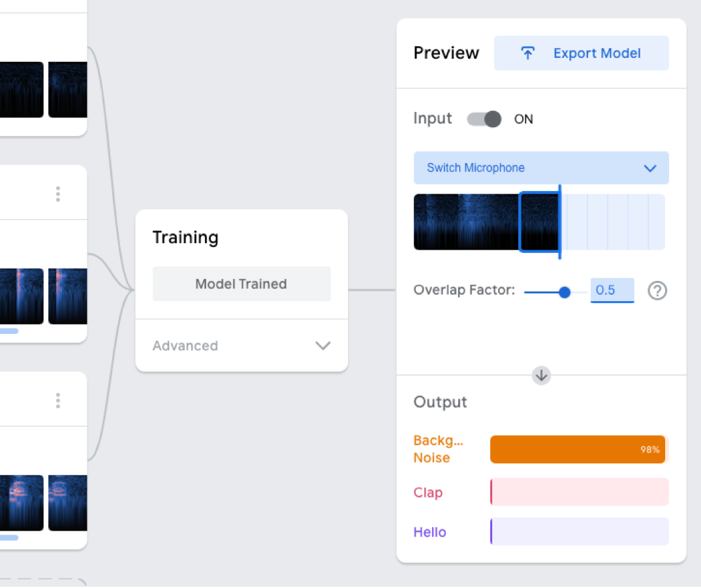
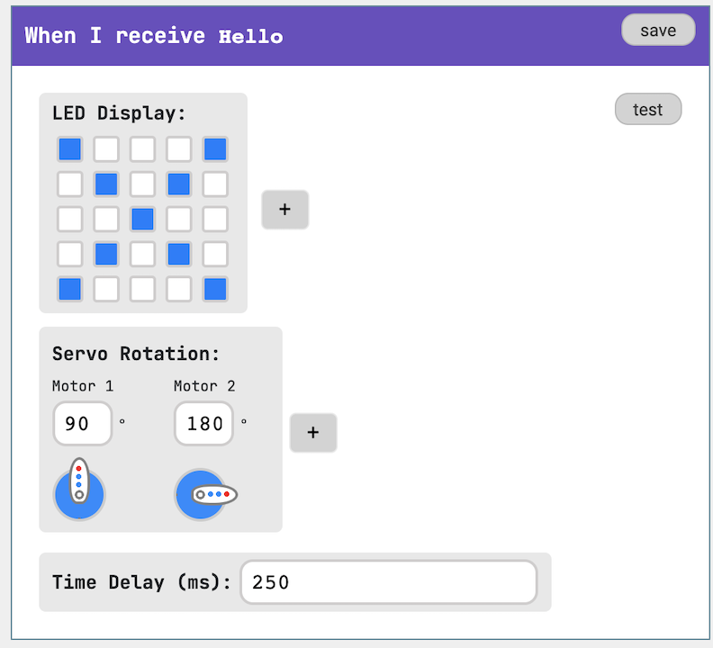

Craft your own interactive Microbit pet that responds to your voice!


Step 1
Create an audio model in Teachable Machine
Use Teachable Machines to create a machine learning model that responds to sounds. Export the model, upload it, and grab its URL.
Step 2
Load the model and pair your Microbit.
Add the URL for your model here and pair your Microbit using Bluetooth. Once connected, you can program the display and servo motors on Pins 1 and 2.
Step 3
Craft your pet
Get creative with craft materials to build your own custom design!
This project is actively under development and is subject to change at any time!